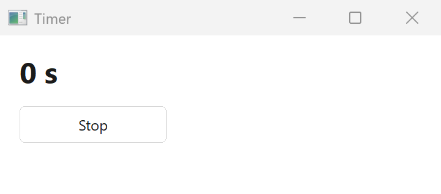

ตัวจับเวลา (Timer)
ในกล่องเครื่องมือ: ตัวจับเวลา · เทียบกับ WinForms: Timer
ทำงานบางอย่างซ้ำทุก ๆ ช่วงเวลา เช่น นาฬิกา นับถอยหลัง เกม ภาพเคลื่อนไหว ตรวจข้อมูลใหม่ทุกนาที - มองไม่เห็นบนหน้าต่าง
- Interval: ห่างกันกี่มิลลิวินาที (1000 = หนึ่งวินาที) · Enabled: เริ่มนับตั้งแต่เปิดหน้าต่างไหม
- ดับเบิลคลิกในตัวออกแบบ ได้ method ที่ทำงานทุกครั้งที่ครบเวลา (
…_ticked) start()/stop()เริ่มและหยุด ·set_intervalเปลี่ยนความเร็ว

อยู่ในกล่องเครื่องมือกลุ่ม คอมโพเนนต์ (Components) - ลากมาวางแล้วมันจะไปอยู่ในแถบด้านล่างของตัวออกแบบ (ไม่ได้อยู่บนหน้าต่าง) · ในโค้ดเรียกมันว่า ui.ชื่อId ซึ่งเป็นชนิด phai_ui::ctl::Timer
ตัวอย่าง
1. นับวินาที
fn clock_ticked(&mut self, ui: &TimerDemoUi) {
// Every Interval (1000 ms = one second) while it is enabled.
self.seconds += 1;
ui.time.set_text(&format!("{} s", self.seconds));
}2. เริ่มและหยุด
fn start_stop_clicked(&mut self, ui: &TimerDemoUi) {
if ui.clock.enabled() {
ui.clock.stop();
ui.start_stop.set_text("Start");
} else {
ui.clock.start();
ui.start_stop.set_text("Stop");
}
}หน้าต่างตัวอย่างทั้งหมด: timer_demo.phaiform กับ timer_demo.rs ในโปรเจกต์ docs/help-src/examples/controls - รันด้วย cargo run -- timer
Method ของ Timer
| Method | ทำอะไร |
|---|---|
start() | เริ่มนับ |
stop() | หยุด |
enabled() -> bool | กำลังนับอยู่ไหม |
set_enabled(on: bool) | เริ่ม (true) หรือหยุด (false) |
interval() -> u32 | ช่วงเวลา (มิลลิวินาที) |
set_interval(ms: u32) | เปลี่ยนช่วงเวลา ถ้ากำลังนับอยู่ก็นับต่อด้วยความเร็วใหม่ |
Properties
ตั้งได้ในหน้าต่าง Properties เมื่อเลือกมันบนฟอร์ม - ตารางนี้สร้างจาก Phai Studio เอง จึงตรงกับที่เห็นในโปรแกรมเสมอ
| Property | ค่าเริ่มต้น | ทำอะไร |
|---|---|---|
| ออกแบบ | ||
| รหัส | timer | ชื่อ control ในโค้ด และ #id ใน CSS |
| พฤติกรรม | ||
| ช่วงเวลา | 1000 | มิลลิวินาทีระหว่างแต่ละครั้ง - 1000 คือหนึ่งวินาที |
| ใช้งานได้ | True | เริ่มจับเวลาตั้งแต่หน้าต่างเปิดหรือไม่ |
Events
ดับเบิลคลิกชื่อ event ในแท็บ Events ของ Properties แล้ว Phai Studio จะเขียน method ให้ (ชื่อในตารางนี้สมมติว่า Id ของมันคือ timer และอยู่บนฟอร์ม MainWindow) - ชี้เมาส์ที่ชนิดของ e เพื่อดูชื่อเต็ม
| Event | ทำอะไร | method ที่ Phai Studio เขียนให้ |
|---|---|---|
| ทุกช่วงเวลา (Tick) | เมธอดที่ทำงานเมื่อเกิดเหตุการณ์นี้ ดับเบิลคลิก control เพื่อเขียน | fn timer_ticked(&mut self, ui: &MainWindowUi) |
ลองทำเอง
- ทำนับถอยหลัง 10 วินาที แล้วขึ้น message_box เมื่อถึง 0
- ทำนาฬิกาที่แสดงเวลาจริงของเครื่อง